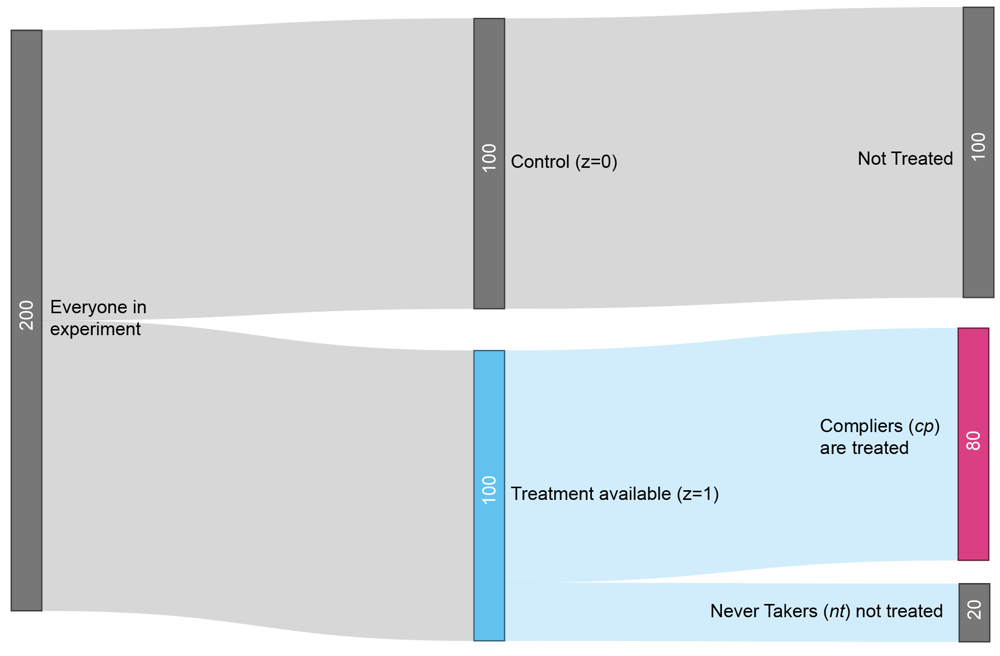
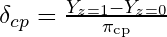

39 Analysis
39.1 Misc
- Also see Post-Hoc Analysis, ANOVA >> ANCOVA
- Recommended metrics to be reported for medical studies (Harrell). Some of this is perhaps generalizable to any RCT with a binary outcome.
- The distribution of Risk Difference (RD)
- covariate-adjusted OR
- adjusted marginal RD (mean personalized predicted risk as if all patients were on treatment A minus mean predicted risk as if all patients were on treatment B) (emmeans?)
- median RD
- Analysis of a two armed trial comparing a treatment to placebo:
- Questions
- Was there a treatment effect in this trial?
- What was the ATE of this trial?
- Was the treatment effect identical for all patients in the trial?
- What was the treatment effect for the different subgroups of the trial?
- What will the treatment effect be when used more generally (outside the trial)?
- Strategies
- (Predictive) adjustment variables (e.g. Age) are good to help answer Q1 & Q2
- Interactions (group_cat treatment) could help answer Q3 and Q4.
- Q5 is about external validity (see Diagnostics, Classification >> Terms)
- Questions
- Analysis shouldnt only include Intent-to-Treat effects
- To adequately guide decision making by all stakeholders, report estimates of both the intention-to-treat effect and the per-protocol effect, as well as methods and key conditions underlying the estimation procedures.
- Intent-to-treat analysis makes sense from a public health point of view if it closely reflects the actual medical practice. But from a patient point of view of making a decision regarding treatment, the actual treatment is more meaningful than intent-to-treat. So, when the two estimates differ considerably, it seems to me that they should both be reported or, at least, the data should be provided that would allow both analyses to be done. Lehman from Gelman blog post
- The correct model models the 4 groups and the conditional probability to be in the 4 groups as a function of pre-treatment covariates, including both psychological covariates, cultural covariates, as well as symptomatic and disease progression knowledge. Lakeland
- Analysis of substudies must be separate
- Example of Study Effects: 2 Studies with the same treatment (Lumiracoxib) but different controls (ibuprofen, naproxen) (article)
- Cells are p-values
- Bottom table shows when a Sub-study indicator is used as a model term (Treatment given Sub-study) vs not used (Treatment), the p-values for all the Demographic Characteristic variables lose significance.
- Example of Study Effects: 2 Studies with the same treatment (Lumiracoxib) but different controls (ibuprofen, naproxen) (article)
39.2 Compliance
- Refers to how observations respond to treatment.
- Full compliance with treatment means that all units to whom a program (i.e. treatment) has been offered actually enroll, and none of the control (aka comparison) units receive the program
- Exclusion of some randomized subjects can be justified (such as patients who were deemed ineligible after randomization or certain patients who never started treatment) when analyzing the results of an experiment.
- Types
- Always-Takers: A person who receives the treatment regardless of the assignment (or instrument in IV).
- Never-Takers: A person who never receives the treatment regardless of the assignment (or instrument in IV).
- Compliers: A person who receives the treatment only when assigned to the treatment group (or when the instrument compels them to).
- Defiers: A person who receives the treatment only when they are NOT assigned to the treament group (or the instrument does not compel them to). They always do the opposite of what the assignment mechanism instructs them to do (assholes). Usually a reasonable assumption to make that there are none in your (quasi-) experiment, but it can only be made based on intuition
- Example: receiving additional years of Education is the treatment; whether an educational Reform was implemented in their region is the instrument
- A person who decides to stay in school regardless of whether theres a government policy to do so would be an Always-Taker (EDUCATION=1, regardless of REFORM )
- Compliance Modeling (Lakeland thread)
- Model how people make the decision to adhere to the randomization or not (Person makes decision about actual treatment step)
- Realistic Model: Enroll person \(\rightarrow\) Randomize to treatment group \(\rightarrow\) Person makes decision about actual treatment \(\rightarrow\) Actual treatment occurs \(\rightarrow\) Outcomes observed
- ITT effect by itself is misleading
- Suppose you did a mouse experiment and randomized mice to different surgeries and then told the surgeons to do the surgery they were randomized to unless they see conditions A,B,C in which case do a different surgery, and then analyzed via intention to treat. That would just be disingenuous. The fact that we dont know a precise rule for adherence doesnt mean adherence isnt part of the question. So build a probabilistic rule for adherence
- Highlights a source of uncertainty which should then increase the uncertainty in the final analysis, but would not be included in the ITT or any other frequentist analysis
- Example: Prostate Cancer
- Pretreatment Survey
- Youre trying to understand the patients state-of-mind.
- Questions:
- What is your age
- What is your biological sex
- What race do you identify as (set of choices)
- What religious affiliation do you affiliate most with (set of choices)
- On the following scale rate the discomfort that your condition causes 0,1,2,3,4,5,6 with some text descriptors from none to severe discomfort
- What is your education level (from some grade school to PhD, and a check mark for whether its a biology/medicine related degree)
- Check all that apply: what are the primary motivations for entering the study (things like to get free treatment and to improve the state of knowledge about the disease and various other things)
- What is your income level?
- Do you have insurance that would cover this treatment outside the study? What is the level of coverage?
- What is your level of concern about having surgery? (from zero to I am very nervous about having surgery)
- What is your level of concern about potential side effects (similar scale)
- Which side effects are you concerned about (check boxes)
- What are your existing thoughts about watchful waiting (0 I believe it is not right for me, up to 6 watchful waiting is my currently preferred treatment)
- What is your current belief about the severity of your condition: similar
- What is your current belief about the aggressiveness of your condition: similar
- What is your current belief about metastatic tumors: 0 I have no reason to believe 6 I have medical biopsy proving metastatic
- Bayesian Procedure
- Now, hypothesize at least the *direction* that each of these affects the probability of compliance with surgery assignment, and with watchful waiting assignment.
- Place a prior over coefficients of each one with bias towards the direction hypothesized in a logistic regression with nonlinear response on any variables that may seem appropriate.
- Now, hypothesize the direction with which some subset of these predicts actual aggressiveness of the underlying condition, for example using the patients own beliefs, using the reported level of symptoms, using info about metastatic condition, etc.
- Place prior over coefficients in a hidden variable model for severity again with nonlinear response if necessary.
- Collect dat
- Posterior distribution of parameters
- Model: adherence ~ Binomial(inv_logit(k * symptom_severity * assigned_monitoring + random_individual_factor))
- With random_individual_factor having a group level prior distribution gets an estimate of the probability of adherence
- So you can fit probability of good outcome based on adherence with symptom_severity informing, telling you something about whether outcomes are due to selection or severity.
- Pretreatment Survey
- Model how people make the decision to adhere to the randomization or not (Person makes decision about actual treatment step)
39.3 Effects
Comparison
.png)
- ATE is for the whole population (he shouldve had the arrow coming out of the word, population, or the edge of the circle)
- Circle is split into half: treatment (upper left, yellow), control/comparison (bottom right, pink)
- ATT is for treated (treated compliers, always takers, treated defiers)
- ATU is for control/comparison (non-treated compliers, never takers, non-treated defiers)
- LATE is for treated compliers
- CATE is for a subset of the population (e.g. men)
Heterogeneous Treatment Effect (HTE) - Also called differential treatment effect, includes difference of means, odds ratios, and Hazard ratios for time-to-event outcome vars
- Ascertaining subpopulations for which a treatment is most beneficial (or harmful) is an important goal of many clinical trials.
- Outcome heterogeneity is due to wide distributions of baseline prognostic factors. When strong risk factors exist, there is hetergeneity in the outcome variable.
- Solution: add baseline predictors to your model that account for these strong risk factors.
- Heterogeneity of Treatment Effects - The degree to which different treatments have differential causal effects on each unit.
- Examples
- The effect of attending college on earnings differs across students
- The effect of a state-wide smoking ban on smoking rates varies across states
Intention-to-Treat (ITT) - estimates the difference in outcomes between the units assigned to the treatment group and the units assigned to the control (aka comparison group in quasi-experiments) group, irrespective of whether the units assigned to the treatment group actually receive the treatment. An intention-to-treat analysis is not feasible if trial participants are lost to follow-up
- Potential solution: weighted average of the outcomes of participants and non-participants in the treatment group compared with the average outcome of the control group
- Example: Doctor tells everyone in a treatment group to go home and exercise for an hour per day and tell the control group nothing.
- After a month, if you just compare the difference in mean blood pressures between the two groups, you get the intention to treat estimator
- Doesnt tell you the causal effect of exercise on blood pressure, but the causal effect of telling people to exercise on blood pressure.
- This estimate would be smaller than the treatment effect of exercise per se, as only a (small!) fraction of people in the treatment group would completely follow the treatment
Modified Intention-to-Treat (mITT) - No ineligible users. This applies to cases where we detect the ineligibility after assignment, but the eligibility criteria are based on factors that could have been known before the experiment. Hence, it should be safe to exclude the ineligible users after the fact
- e.g. bots and existing users should increase the observed effect size, but not change the preferred variant.
Modified Intention-to-Treat No Crossovers (mITTnc). If we have a mechanism to detect some crossovers, excluding them and comparing the results to the intention-to-treat analysis may uncover implementation bugs.
Crossovers are users that experience both the treatment and control exposures or (unintentionally) more than one treatment
Its worth noting that crossovers shouldnt occur in cases where we can uniquely identify users at all stages of the experiment it is a problem that is more likely to occur when dealing with anonymous users.
As such, and given the inability to detect all crossovers, A/B experiments should be avoided when users are highly motivated to cross over.
- Example: displaying different price levels based on anonymous and transient identifiers like cookies is often a bad idea.
Average Treatement Effect (ATE) - expected causal effect of the treatment across all individuals in the population
OLS estimate, Yi = 0 + 1Xi + ui
- 1 = ATE = E[Y |X = 1] E[Y |X = 0] = E[1,i ] = Average effect of a unit change in X
Conditional Average Treatment Effect (CATE) - ATE for a subgroup
- Coefficient for an interaction (e.g. explanatory*treatment)
- Also see Generalized Additive Models (GAM) >> Interactions
- Coefficient for an interaction (e.g. explanatory*treatment)
Average Treatment Effect on the Treated (ATT) - expected causal effect of the treatment for individuals in the treatment group ATT = E[ | D = 1] = E[Y1 Y0 | D = 1] = E[Y1 | D = 1] E[Y0 | D = 1]
where : individual-level causal effect of the treatment and D is the treatment
In the ideal scenario of a randomized control trial (RCT) (commonly violated in observational studies), ATE equals ATT because we assume that:
- the baseline of the treatment group equals the baseline of the control group (layman terms: people in the treatment group would do as bad as the control group if they were not treated) and
- the treatment effect on the treated group equals the treatment effect on the control group (layman terms: people in the control group would do as good as the treatment group if they were treated).
ATT should be used instead of ATE when theres extreme imbalance between covariate criteria of treated vs control/comparison groups (e.g. quasi-experiment)
.png)
- Also see Econometrics, General >> Propensity Scoring
- Overlap plot or balance plot from video
- {cobalt} may provide a way generate these
- y-axis: count, x-axis: covariate, color: treatment
- The range of x covered by blue (treatment) is much smaller than the range of x covered by red (control), therefore ATT might be a better choice of estimated effect
Local Average Treatment Effect (LATE) - applies when there is noncompliance in the treatment group, comparison group, or both simultaneously.
- If there is noncompliance in both the treatment and comparison group, then the LATE estimate is valid only for those in the treatment group (who enrolled in the program; i.e. treated) and (who would have not enrolled had they been assigned to the control/comparison group).
- who would have not enrolled had they been assigned to the comparison group is a weird counterfactual
- Local indicates that LATE is the average effect for the group known as compliers
- Treatment and Instrument are binary variables
- IV models still valid for treatments and instruments with more than 2 levels, but effect calculation is more complicated
- Calculation (always-takers and defiers are assumed not to exist)
LATE = (avg potential outcome of compliers who do receive treatment) - (avg potential outcome of compliers who dont receive treatment)
The (avg potential outcome of compliers who dont receive treatment) has to be solved for.
- Given that we know the proportions and outcomes for the compliers and never-takers in our treatment group, you can solve a simple equation for this quantity.
- See video for details
Think this is the primary estimate of an IV model as well (see Econometrics, General >> Instrumental Variables)
- Treatment-on-the-treated (ToT) is simply a LATE in the more specific case when there is noncompliance only in the treatment group. Estimates the difference in outcomes between the units that actually receive the treatment and the comparison group (Seems similar to ATT)
Per-Protocol Effect (PPE) - the effect of receiving the assigned treatment strategies throughout the follow-up as specified in the study protocol
- i.e. the effect that would have been observed if all patients had adhered to the protocol of the RCT
- Alternative to the intention-to-treat effect that is not affected by the study-specific adherence to treatment
- Valid estimation of the per-protocol effect in the presence of imperfect adherence generally requires untestable assumptions
- Approaches below are generally invalid to estimate the per-protocol effect. (G-estimation and instrumental variable methods can sometimes be used to estimate some form of per-protocol effects even in the presence of unmeasured confounders)
- (biased) Approaches:
- As-Treated: Compare the outcomes of those who took treatment (A=1) and didnt take the the treatment (A=0) regardless of their assignment
- Pr[Y=1|A=1] Pr[Y=1|A=0]
- Per-Protocol: Compare the outcomes of those who took treatment (A=1) among those assigned to Treatment (Z=1) to those who didnt take the treatment (A=0) among those assigned to Control (Z=0)
- Pr[Y=1|A=1, Z=1] Pr[Y=1|A=0, Z=0].)
- As-Treated: Compare the outcomes of those who took treatment (A=1) and didnt take the the treatment (A=0) regardless of their assignment
- (biased) Approaches:
39.4 Calculating LATE
- Misc
- Notes from https://chris-said.io/2021/03/28/youre-measuring-wrong/
- Experiment
- z is the treatment availability assignment
- cp is shorthand for complier, referring to people who complied with the instructions.
- Ycp,z = 1 therefore represents the average outcome of the group that actually received treatment, since they were compliers (cp) who were randomly assigned to treatment availability (z=1).
- Yz = 0 represents the average outcome of the control group (z=0).
- Local Average Treatment Effect (LATE)

- The LATE tells you how much the treatment affects the people who actually got treated
- cp = Ycp,z = 1 - Y0cp,z=1
- cp is the Local Average Treatment Effect (LATE), since it reflects the impact of the treatment on a particular subpopulation (subpopulation being the compliers who were treated)
- Ycp,z = 1 is the average outcome for compliers who were treated
- Y0cp,z=1 is the average outcome for compliers if they hypothetically werent treated (counterfactual)
- Using substitution and some algebra (see article above for details), the counterfactual part can be avoided and this equation becomes
- cp is the fraction of compliers
- Bias within complier group
- Groups counterfactual outcomes might be different from other groups.
- LATE accounts for that by correctly reporting the impact of the treatment relative to the counterfactual.
- The treatment might be more effective in the complier group than in the never-taker group.
- That bias is unescapable and is known as a heterogenous treatment effect. The way to deal with this bias is to acknowledge it transparently.
- Groups counterfactual outcomes might be different from other groups.
- If treatment involves more than a single dose, and people can withdraw midway through the program.
- Report the Intention To Treat (ITT) metric, which is the impact of being assigned to treatment (Yz=1 Yz=0) rather than the impact of being treated.
39.5 Change Score Models
Change Scores - subtract the baseline value of the outcome from the value measured at the end of the study and use that difference for your statistical tests or models.
Misc
- See tutorial, https://github.com/CRFCSDAU/EH6126_data_analysis_tutorials/blob/master/Unit_1_Review/Change_scores/Change_scores.md
- Reason: Randomization of participants will result in groups (e.g. treated/control) that are comparable on average over many hypothetical trials, at the end of the day, we just have the one trial that we actually ran. And for that one trial there really could be important differences between the groups at baseline that could lead to errors of inference (e.g. concluding the treatment is beneficial when it isnt).
- Example: a trial for a blood pressure medication that we hope will lower patients SBP values. So we set up the trial, recruit some patients and randomize them into two groups. Then we give one group the new medication we are testing, and the other gets standard-of-care. At the end of the study we compare the mean blood pressure of the two groups and find that the active group had a SBP that was 3 mmHg lower, on average, than the values seen in the control group. We might thus conclude that the treatment worked. However, what if it just so happened that the active group also had a similarly lower mean blood pressure (vs the other group) measured at baseline, before the intervention?
Example: Change Score Model
.png)
w1 <- glm(data = dw, family = gaussian, (post - pre) ~ 1 + tx)Specification
- Where
- post, pre are pre-treatment, post-treatment measurements of the outcome variable
- tx is the treatment indicator variable
- 0: population mean for the change in the control group
- easier to interpret if pre is mean centered
- 1: parameter is the population level difference in pre/post change in the treatment group, compared to the control group.
- Also a causal estimate for the average treatment effect (ATE) in the population,
- Where
39.6 Examples
- Example: pretest-posttest between-person factorial design to compare competing theories on depression and suicidal behaviors. (link)
- Example: Gelman (general approach)
- Notes from: Article
- EDA
- Variables
- Outcome:
- (top) Absolute EEG (brainwaves) power; X-axis is frequency
- (bottom) log(Absolute EEG (brainwaves) power); X-axis is frequency
- Blue: Each control group patient
- Red: Each treatment group patient
- Outcome:
- Interpretations
- Raw, z-scores, Relative to mean:
- Not logged: substantial overlap between Control and Treatment groups
- log: Control and Treatment groups almost completely overlap
- Group averages relative to the mean at each frequency:
- So grouped by group, frequency> mutate(mean)?
- Substantial differences
- Raw, z-scores, Relative to mean:
- Compare sample data with random-chance data
- Keep the same observations but randomly permute the treatment assignment variable and see what happens
- Repeat (e.g. 9 times)
- Group averages: patterns in these random permutations dont look so different, either qualitatively or quantitatively, from what we saw from the actual comparison
- The red line is on top most of the time and substantially separated from the blue line 3 out fo the 9 times.
- Group averages: patterns in these random permutations dont look so different, either qualitatively or quantitatively, from what we saw from the actual comparison
- Variables
- log response if:
- all the measurements are positive
- Seems reasonable to start with proportional effect
- include pre-test brain activity as a predictor (baseline)
- fit y ~ z + x
- y = outcome (log brain activity),
- z = treatment indicator
- x = pre-treatment measure
- Try including interaction of x and z
- Plot y vs. x with blue dots for the controls (z=0) and red dots for the treated kids (z=1).
- Example: Soloman, RCT, 2 groups, unequal treatment schedule
- Notes from: Thread
- first three time points are baseline, mid-treatment, and immediately post-treatment. The last two are follow-ups
- Nonlinear means indicate a GAM would be a good option
- Solution
- GAM:
mgcv::gam(data, y ~ 1 + group + s(weeks, by = group, k = 4) + s(week, subject, bs = "fs", k = 4))- random smooth for subjects not just a random intercept
- subject is a factor variable
- fs is a factor smooth spline
predict(fit, exclude = "s(weeks,subject)")- computes the population fitted lines
gratia::smooths(model)will return the labels for all smooths in the model so you know what you need for the exclude call without having to callsummary()
- GAM:
- Example: Randomized Complete Block Design (RCBD)
notes from https://www.r-bloggers.com/2020/12/accounting-for-the-experimental-design-in-linear-nonlinear-regression-analyses/
Data
Obs block trt 1 2 B 2 2 C 3 2 A 4 2 D 5 2 E 6 2 F 7 1 B 8 1 C 9 1 E 10 1 A 11 1 F 12 1 D 13 3 D 14 3 A 15 3 C 16 3 F 17 3 B 18 3 E 19 4 A 20 4 F 21 4 B 22 4 C 23 4 D 24 4 EFitting a linear model (eda: check scatterplot of outcome vs treatment)
do not model with block as a fixed effect
mod.reg <- lm(yield ~ block + density, data=dataset)assumes that the blocks produce an effect only on the intercept of the regression line, while the slope is unaffected
do model with block as a random effect (i.e. block effect may produce random fluctuations for both model parameters, intercept and slope)
modMix.1 <- lme(yield ~ density, random = ~ density|block, data=dataset)
# or equivalently
modMix.1 <- lme(yield ~ density, random = list(block = pdSymm(~density)), data=dataset)
## Linear mixed-effects model fit by REML
## Data: dataset
## AIC BIC logLik
## 340.9166 355.0569 -164.4583
##
## Random effects:
## Formula: ~density | block
## Structure: General positive-definite, Log-Cholesky parametrization
## StdDev Corr
## (Intercept) 3.16871858 (Intr)
## density 0.02255249 0.09
## Residual 1.38891957
##
## Fixed effects: yield ~ density
## Value Std.Error DF t-value p-value
## (Intercept) 31.78987 1.0370844 69 30.65311 0
## density -0.26744 0.0096629 69 -27.67704 0
## Correlation:
## (Intr)
## density -0.078
##
## Standardized Within-Group Residuals:
## Min Q1 Med Q3 Max
## -1.9923722 -0.5657555 -0.1997103 0.4961675 2.6699060
##
## Number of Observations: 80
## Number of Groups: 10- If there is NOT a strong correlation between the slope (e.g. listed above as corr = 0.09 for density) and intercept (i.e. correlated random effects) in the Random Effects section of summary(modMix.1), try modeling with the random effects as independent
modMix.2 <- lme(yield ~ density, random = list(block = pdDiag(~density)), data=dataset)- pdDiag specifies a var-covar diagonal matrix, where covariances (off-diagonal terms) are constrained to 0
- check if the change made a significant difference (i.e. pval < 0.05)
anova(modMix.1, modMix.2)- Other options include: either random intercept or random slope
# Model with only random intercept
modMix.3 <- lme(yield ~ density, random = list(block = ~1), data=dataset)
# Alternative notation
# random = ~ 1|block
# Model with only random slope
modMix.4 <- lme(yield ~ density, random = list(block = ~ density - 1), data=dataset)
# Alternative notation
# random = ~density - 1 | block- Fitting a nonlinear model
library(aomisc)
datasetG <- groupedData(yieldLoss ~ 1|block, dataset)
nlin.mix <- nlme(yieldLoss ~ NLS.YL(density, i, A), data=datasetG,
fixed = list(i ~ 1, A ~ 1),
random = i + A ~ 1|block)
# or equivalently
nlin.mix2 <- nlme(yieldLoss ~ NLS.YL(density, i, A), data=datasetG,
fixed = list(i ~ 1, A ~ 1),
random = pdSymm(list(i ~ 1, A ~ 1)))
## Nonlinear mixed-effects model fit by maximum likelihood
## Model: yieldLoss ~ NLS.YL(density, i, A)
## Data: datasetG
## AIC BIC logLik
## 474.8225 491.5475 -231.4113
##
## Random effects:
## Formula: list(i ~ 1, A ~ 1)
## Level: block
## Structure: General positive-definite
## StdDev Corr
## i 0.1112839 i
## A 4.0466971 0.194
## Residual 1.4142009
##
## Fixed effects: list(i ~ 1, A ~ 1)
## Value Std.Error DF t-value p-value
## i 1.23242 0.038225 104 32.24107 0
## A 68.52068 1.945173 104 35.22600 0
## Correlation:
## i
## A -0.409
##
## Standardized Within-Group Residuals:
## Min Q1 Med Q3 Max
## -2.4414051 -0.7049356 -0.1805322 0.3385275 2.8787362
##
## Number of Observations: 120
## Number of Groups: 15- Exclude correlation between random effects (0.194 above) if not substantial for a simpler model
nlin.mix3 <- nlme(yieldLoss ~ NLS.YL(density, i, A), data=datasetG,
fixed = list(i ~ 1, A ~ 1),
random = pdDiag(list(i ~ 1, A ~ 1)))